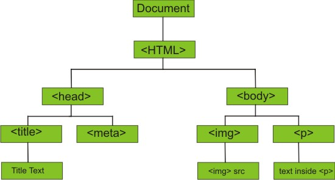

JavaScript & DOM
My JavaScript and DOM learnings
30th April 2021 | Sprint 3
HTML & CSS analogy
Probably the most common analogy (and for good reason) is the house analogy.
HTML is the foundations, walls and roof of the house. A basic framework that is pretty ugly to look at.
CSS adds textures, colour and style. So the colour of the walls, the size of the front door and where the windows are.
JavaScript is the functionality. It allows the doors and windows to open, the doorbell to make a sound when pressed and the garden lights to come on when getting dark.
Control flow and loops
Control flow is just the flow of code throughout a script. Computers read and execute code from top to bottom so order is extremely important. We can use if statements and functions to direct the flow dependent on conditions.
Loops are a way to get the computer to repeat a task x number of times (or until a condition is met). We use for and while loops to do this.
Here is an example of how I decide to turn the heating on:
// Due to the constant variation in our days at home we control our heating manually
// Here's a basic script to help us decide whether we we need to heat or cool the house
var anyoneHome = true;
var heating = {
onStandby: false,
heatOn: false,
coolOn: false
}
if (anyoneHome = true) {
heating.onStandby == true
}
var currentTemp = window.prompt("What is the temperature now?");
function setHeating() {
if (currentTemp < 19) {
heating.heatOn == true
heating.coolOn == false
} else if (currentTemp > 19) {
heating.heatOn == false
heating.coolOn == true
} else {
heating.heatOn == false
heating.coolOn == false
}
}
while (heating.onStandby = true) {
setHeating();
}
The DOM
The DOM is the glue that joins the HTML, CSS and JS. It’s not a programming language, more of a framework that allows languages such as JS to access and manipulate elements within a HTML document.
It’s an object representation of the entire HTML document and is visually displayed like a family tree. As you can see from the image below:
It’s made up of nodes - elements, attributes, text, comments etc
It is used to manipulate a static document (HTML in this case) to make it dynamic or interactive.
You don't have to do anything special to begin using the DOM. Different browsers have different implementations of the DOM, and these implementations exhibit varying degrees of conformance to the actual DOM standard, but every web browser uses some document object model to make web pages accessible via JavaScript.
When you create a script–whether it's inline in a script element or included in the web page by means of a script loading instruction–you can immediately begin using the API for the document or window elements to manipulate the document itself or to get at the children of that document, which are the various elements in the web page. One of the ways to access the DOM is through the browser Developer Tools, which every browser has a version of. These tools are used to inspect, analyse, test and debug code within the webpage.
For example the DOM can be used to identify all H1 tags in the HTML document and add a new class to change the appearance of all those elements.
Arrays & Objects in JS
Objects are a data type that store a collection of data that represents a ‘thing’ with characteristics i.e. a person, car, animal, character in a game. They are defined by a number of properties (characteristics) that consist of a key and value (key:value) pair:
var carObject {
model: ‘Toyota’,
make: ‘RAV4’,
year: 2020,
colour: ‘Black’,
automatic: true
}
Objects have unordered properties that access the values by using named indexing, which is dot (carObject.make) or bracket (carObject[‘Make’]) notation on the key. Adding or amending values is as simple as assigning the new value to the key. If you want to delete a property you use the keyword ‘delete’ before the name index.
Arrays are a data variable in the form of an ordered list of elements:
var carList = [‘Toyota’, ‘RAV4’, 2020, ‘Black’, true]
Arrays are ordered and values don’t have a key so to access them you use zero indexing. carList[1] would be the second element in the list. You use methods such as push(), pop(), unshift(), shift() to add and remove elements
Data in both objects and arrays can be accessed and are mutable (can be changed). You can iterate through objects and arrays using for loops (for in, for of, forEach).
Functions
Functions are a block of contained code designed to perform a particular task. It can take inputs (parameters), perform tasks or calculations on the arguments passed in and finally return an output. It is executed when the function name is called.
Function myFunctions(parameter) {
// code to be executed
return value
}
Functions help keep code clean and tidy and make code reusable, which helps reduce duplicating code.
Thanks for reading :-)